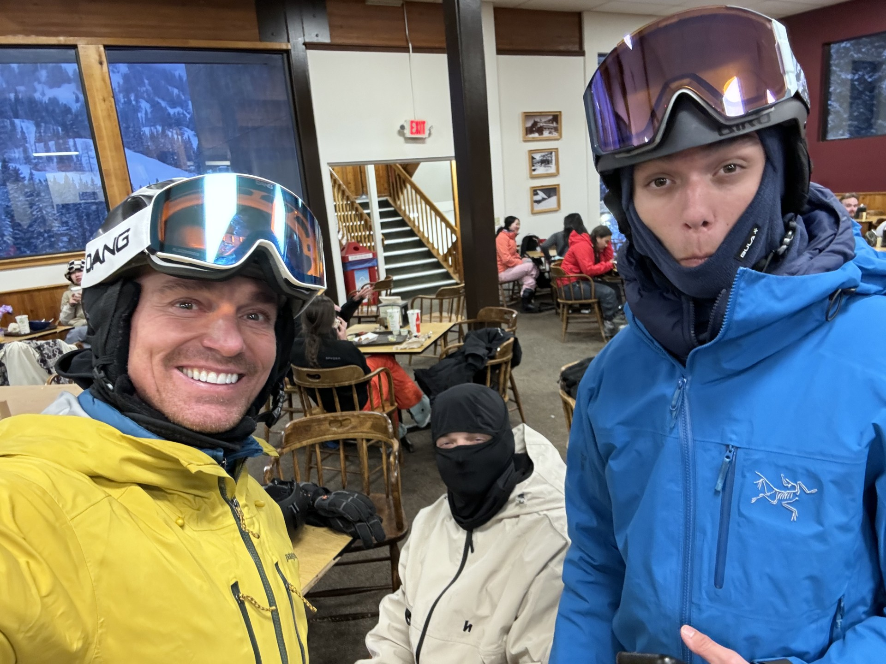
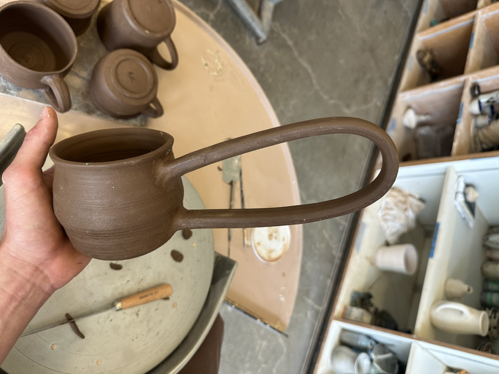
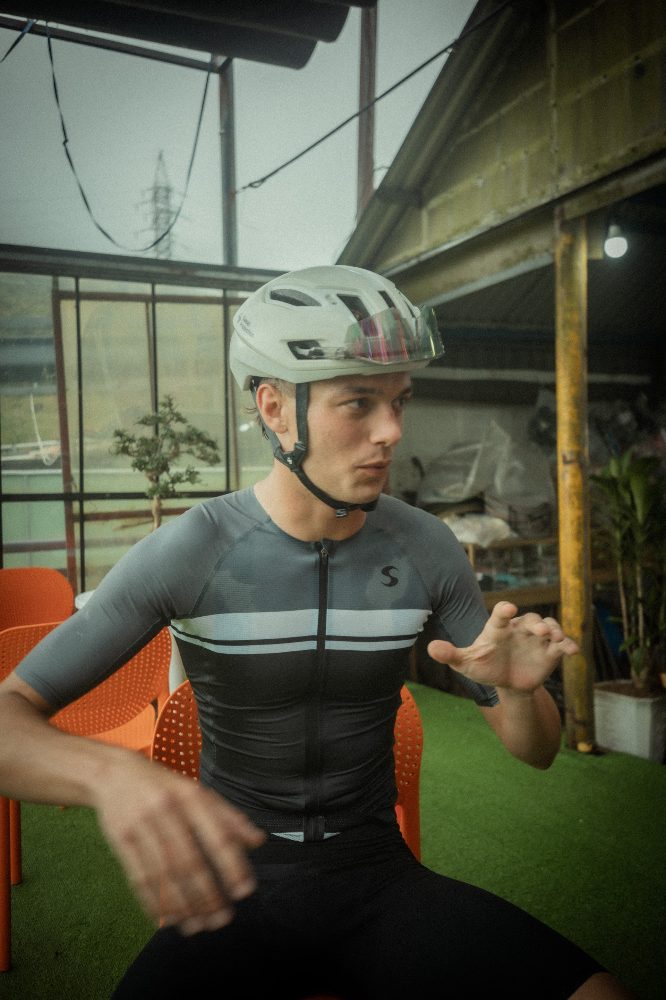
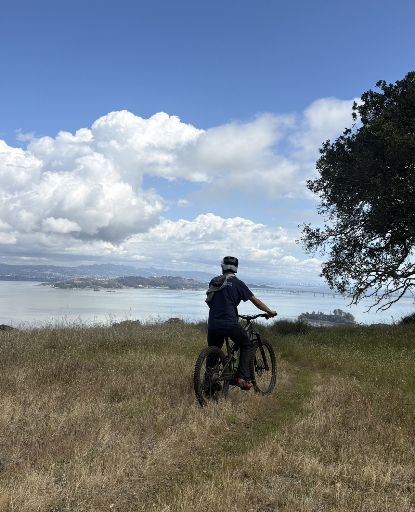
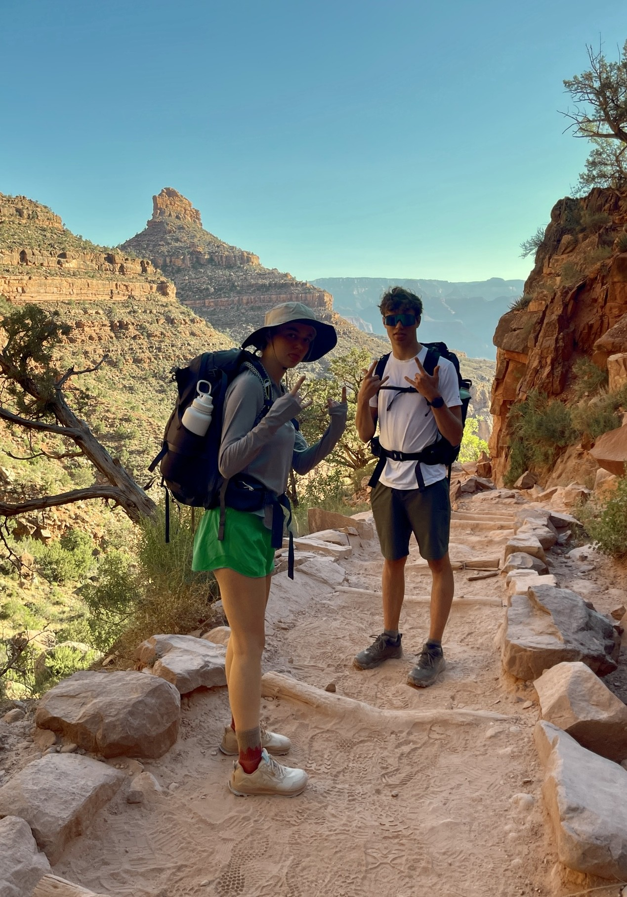
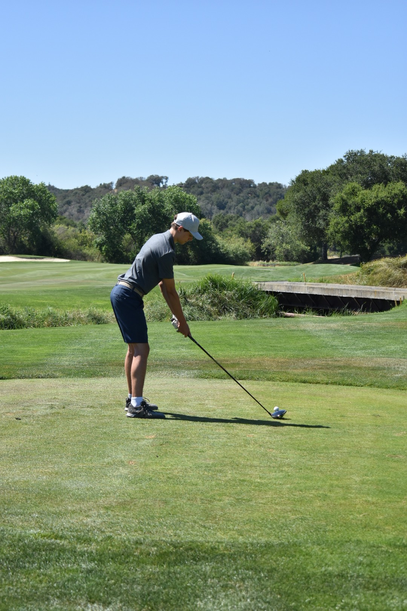

I am fortunate to have lived half of my life in South Lake Tahoe, California, surrounded by the Sierra Nevada mountains. The other half was in Marin County, California, the birthplace of mountain biking near the coast. I believe these environments fostered me into an outdoors enthusiast.
Growing up in the Sierra Nevada mountains, skiing is a passion and my favorite way to get out durring the winter.

I enjoy the creative process of ceramics, I used this as meditative hobby.

Cycling is Maybe the most central part of my life.

With living in Marin I have access to some of the best mountain biking trails in the world.

I have always loved hiking and going on nature walks, I especially like to learn about the plants in the area im hiking in.

I played on my Highschool golf team and am currently trying to get back into the sport.

These activities represent how I choose to spend most of my time.